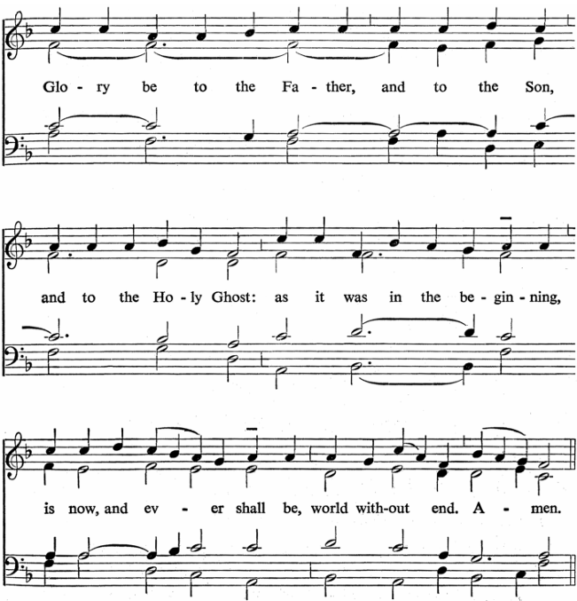
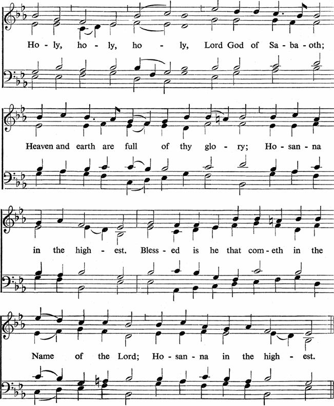
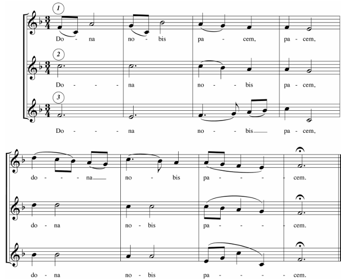
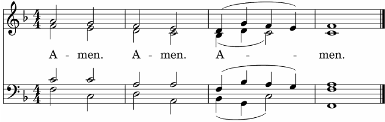

Silent PrayerSilent Prayer — We prepare ourselves to worship God.
InvitationInvitation — God invites us to gather in his house in heaven itself, to share with us his eternal life through his Word and Sacrament (Heb. 12:18-24; Ex. 19:16-24; 24:1-11).
StandPhysical PosturePhysical Posture — We worship God with our whole being, both mind and body, so there are instructions such as “stand,” “sit,” or “kneel.” But you are always free to remain in whatever posture your physical needs may require. For example, if you are carrying a baby or suffering from a backache, you may remain seated at any time.
Officiant
In the name of the Father, Son, and Holy Spirit,Triune NameTriune Name — This name is invoked at the beginning of the service because all that follows is not merely the actions of people but, as we worship, the Triune God himself acts through us and among us.
People
Amen.
Officiant
The Lord be with you.
People
And also with you.
Officiant
I rejoiced when they said to me, Let us go into the house of the Lord.
People
Our feet are within your gates, O Jerusalem.
Officiant
Our help is in the name of the Lord.
People
Maker of heaven and earth.

Gloria Patri (“Glory be to the Father”)Gloria Patri (“Glory be to the Father”) — When we enter God’s house, we behold and praise the glory of Father, Son, and Holy Spirit.
ConfessionConfession — Before the service, we prepare for confession by recalling our particular sins. Now, we bring them before God in repentance.
Kneel (Stand)
Officiant
Come, let us worship and bow down.
People
And kneel before the Lord our Maker.
Officiant
Lord, rebuke me not in Your anger,
People
Neither chasten me in Your hot displeasure.
Officiant
Have mercy on me, O God, according to Your steadfast love.
People
According to your abundant mercy blot out my transgressions. Wash me thoroughly from my iniquity, and cleanse me from my sin. For I know my transgressions, and my sin is ever before me. Against you, you only, have I sinned and done what is evil in your sight, so that you may be justified in your words and blameless in your judgment. Behold, I was brought forth in iniquity, and in sin did my mother conceive me.
Officiant
Almighty and most merciful God,
All
We confess that we have done those things which we ought not to have done, and have left undone those things which we ought to have done, and that we have sinned against You in thought, word, and deed. We beg You to forgive us sinners and make us to walk with new life, according to Your will, that we may show Your glory, through our Savior Jesus Christ. Amen.
Silent Confession
AbsolutionAbsolution — The pastor proclaims God’s forgiveness offered through the cross of Christ to all who truly repent. As we enter his house, God washes the feet of the baptized (Jn. 13:10).
Officiant
The LORD is longsuffering, and of great mercy, forgiving iniquity and transgression, and by no means clearing the guilty, visiting the iniquity of the fathers upon the children unto the third and fourth generation.
People
Amen.
Officiant
You are forgiven according to God’s Word.
People
Amen.
Ascension
Stand
Officiant
In peace let us pray to the Lord.
People
Lord, have mercy.Kyrie (Lord, have mercy)Kyrie (Lord, have mercy) — As a forgiven and sanctified people, we offer prayers to God on behalf of the Church and the whole world. This ancient prayer for mercy is based on the Psalms and Gospels (Ps. 123:3; Mt. 20:30-31).
Officiant
For the peace that is from above, and for the salvation of souls, let us pray to the Lord.
People
Christ, have mercy.
Officiant
For the peace of the whole world, for the well-being of the churches of God, and for the unity of all, let us pray to the Lord.
People
Lord Jesus Christ, have mercy.
Officiant
For this household, and for them that in faith, piety, and fear of God offer here their worship and praise, let us pray to the Lord.
People
Lord, have mercy.
Officiant
Help, save, pity, and defend us, O God, by Your grace.
People
Amen.
Officiant
The Lord be with you.
People
And also with you.
Officiant
Lift up your hearts.Sursum CordaSursum Corda — As we “lift up our hearts to the Lord,” we ascend higher and deeper into the presence of God.
People
We lift them up unto the Lord.
Officiant
Let us give thanks to the Lord our God.
People
It is meet and right so to do.
Officiant
Holy Father, everlasting and almighty God, it is good, right, and beneficial that we should at all times and in all places give thanks to You, O Lord. The Father from before time has created all things by the Son, and has created us even to be like unto Himself. The Father has sent the Son to be born as a man in order to free us from the bondage of our sins by His death on the cross and resurrection, and has seated Him at His right hand. And sent the Holy Spirit that we may stand before His presence and serve the Lord as priests. Therefore, with angels and with all the company of heaven, and with all the Church on earth, we laud and magnify the Name of the Lord, singing:

Sanctus (Holy, Holy, Holy)Sanctus (Holy, Holy, Holy) — Now before the very throne of God, we join the choir of angels and saints in heaven and on earth to sing the everlasting Holy, Holy, Holy (Is. 6:3; Rev. 4:8) and bless Jesus Christ our king.
Sit
Shepherd’s PrayerShepherd’s Prayer — We pray that the will of God, about to be revealed by his Word, might be done in the Church and all the world. As priests, we offer intercession for all in the name of Jesus Christ, our high priest (1 Tim. 2:1-8). We pray especially for our own neighbors and community (Jer. 29:7).
Ministry of the WordMinistry of the Word — Every Sunday, there are four readings: from the Old Testament, the Psalms, the Epistles, and the Gospels (1 Tim. 4:13). Here, God speaks to us the words of eternal life and equips us for every good work (2 Tim. 3:16-17).
Stand
Officiant
Hear, O Israel: the Lord our God is one Lord. I am the LORD thy God, which brought thee out of the land of Egypt, from the house of bondage.
All
Thou shalt have none other gods before Me.
Thou shalt not make thee any graven image. Thou shalt not bow down thyself unto them, nor serve them.
Thou shalt not take the Name of the LORD thy God in vain.
Keep the sabbath day to sanctify it.
Honour thy father and thy mother.
Thou shalt not kill.
Neither shalt thou commit adultery.
Neither shalt thou steal.
Neither shalt thou bear false witness against thy neighbour.
Neither shalt thou covet any thing that is thy neighbour’s.
Officiant
Love the LORD thy God with all thine heart, and with all thy soul, and with all thy might. Love thy neighbour as thyself.
Summary of the LawSummary of the Law — The Ten Commandments are the summary of all the laws of the Mosaic covenant. Jesus further sums them up in the two great commandments. For, as Paul says, “Love is the fulfillment of the law” (Rom. 13:10).
Sit
Old Testament Reading
Reader
A Reading from the Old Testament.
Reader
The Word of the Lord.
People
Thanks be to God.
Responsive Psalm ReadingPsalm — The psalms are the divinely inspired hymnal of the Church. Historically, they were sung responsively (Ezra 3:11), manifesting the covenantal pattern in which God acts and his people respond.
Epistle Reading
Reader
A Reading from the Epistles.
Reader
The Word of the Lord.
People
Thanks be to God.
Reader
Give thanks to the Lord and call upon His Name.
Psalm / Hymn [1]
Stand
Gospel ReadingGospel — In the Gospel reading, Jesus Christ addresses us particularly, so we stand to show him attention and honor.
Reader
A Reading from the Gospels.
Reader
The Gospel of our Lord.
People
Glory be to you, O Lord.
Nicene CreedCreed — The Niceno-Constantinopolitan Creed (A.D. 381) is the common creed of all orthodox Christian Churches. It confesses faith in the Father, Son, and Holy Spirit, and tells the story of the world from creation, to Christ’s coming, to his return and eternal kingdom. We recite this every week as a testament to the one faith of the Church.
All
I believe in one God, the Father Almighty, maker of heaven and earth, and of all things visible and invisible; And in one Lord Jesus Christ, the only-begotten Son of God, begotten of his Father before all worlds, God of God, Light of Light, very God of very God, begotten, not made, being of one substance with the Father; by whom all things were made; who for us men and for our salvation came down from heaven, and was incarnate by the Holy Spirit of the Virgin Mary, and was made man; and was crucified also for us under Pontius Pilate; he suffered and was buried; and the third day he rose again according to the Scriptures, and ascended into heaven, and sits on the right hand of the Father; and he shall come again, with glory, to judge both the quick and the dead; whose kingdom shall have no end. And I believe in the Holy Spirit, the Lord and Giver of Life, who proceeds from the Father and the Son; who with the Father and the Son together is worshipped and glorified; who spoke by the Prophets. And I believe one holy Catholic and Apostolic Church; I acknowledge one Baptism for the remission of sins; and I look for the resurrection of the dead, and the life of the world to come. Amen.
Officiant
The word is very near you. It is in your mouth and in your heart, so that you can do it: that is, the Word of faith, which we preach; if you confess with your mouth that Jesus is Lord and believe in your heart that God raised him from the dead, you will be saved.
Sit
SermonSermon — From ancient times, the reading of the Word was followed by an explanation of its meaning (Neh. 8:7-8). The sermon shows how the Word reveals Christ to you and the world, aiding you to understand what the Spirit is saying to you here and now (Acts 8:30-31).
(Sermon)
Passing of the PeacePassing of the Peace — From here begins the Liturgy of the Eucharist. The officiant and people briefly pass the peace to each other to prepare for communion in anticipation of the Kingdom. Just as we must confess our sins to be received by God, we must also be reconciled to our brothers (1 Jn. 2:9-10). We do not have opportunity here to reconcile with all our brothers, but the peace serves as a reminder and token of our mutual forgiveness and love.
Officiant
The peace of the Lord be always with you.
People
And with your spirit.
OffertoryOffertory — Our tithes are placed upon the altar together with the bread and wine, representing God’s gifts to us. In this act, we place ourselves and all that we have upon the altar, offering our lives wholly to God in response to his grace.
Officiant
Let us give due glory to the Lord and make our offerings to Him.
Stand
Psalm / Hymn [2]
Great Thanksgiving
Sit
Officiant
To fulfill the holy will of God, and to accomplish our salvation, our Lord Jesus Christ, on the night when he was betrayed, took bread; and when he had given thanks, he broke it, and gave it to his disciples, saying: “Take, eat; this is my body, which is given for you. Do this in remembrance of me.”Words of InstitutionWords of Institution — As the pastor recounts the deeds of Christ at the Last Supper, repeating the words he said over the bread and wine, we enter sacred time, both commemorating the cross of Christ in the past and receiving a foretaste of the future marriage feast of the Lamb.
In the same manner also, after supper, he took the cup, and when he had given thanks, he gave it to them, saying: “Drink of this, all of you; this cup is the new covenant in my blood, which is shed for you and for many for the forgiveness of sins. Do this, as often as you drink it, in remembrance of me.”
For as often as we eat of this bread and drink of this cup, we proclaim the Lord’s death until he comes.
People
Christ has died, Christ is risen, Christ will come again.
Officiant
With this bread and wine, we commemorate the life of our Lord offered for us. Believing in the witness of his resurrection, we await the day of his coming again, when he will gather us to the great and promised feast.
People
Amen. Come, Lord Jesus.
Officiant
Send now, we pray, your Holy Spirit, the Spirit of our risen Lord, that we may share in the body and blood of Christ, giving you glory and praise, and may, with all your saints, inherit your heavenly kingdom.
People
Amen. Come, Holy Spirit.EpiclesisEpiclesis — We ask the Holy Spirit to work so that, through his power, Christ might be present with us in the bread and wine, and that we might be transformed and blessed through union with Christ.
Officiant
Through him, with him, in him, in the unity of the Holy Spirit, all glory and honor is yours, almighty Father, now and forever.
All
AMEN!Great AmenGreat Amen — The congregation shouts this as our joyful affirmation of all that has been prayed so far, in celebration of the amazing grace of God.
Officiant
Let us pray as our Lord Jesus Christ has taught us:Lord’s PrayerLord’s Prayer — This prayer prepares our hearts for holy communion. And the Eucharist is the answer to its every petition.
All
Our Father, who art in heaven, hallowed be thy name; thy kingdom come; thy will be done; on earth as it is in heaven. Give us this day our daily bread. And forgive us our trespasses, as we forgive those who trespass against us. And lead us not into temptation; but deliver us from evil. For thine is the kingdom, and the power and the glory, for ever and ever. Amen.
Holy CommunionCommunionCommunion — This is the climax of the service, when our union with Christ is renewed. All who are baptized in the name of the Trinity (and not under excommunication) are welcome to receive communion.
Officiant
When we break the bread,
People
We partake of Christ’s Body.
Officiant
When we bless the cup,
People
We partake of Christ’s Blood.
Officiant
Because the bread is one,
All
Even though we are many, we are one Body.
All
Lamb of God, that takes away the sins of the world, Have mercy upon us.
Lamb of God, that takes away the sins of the world, Have mercy upon us.
Lamb of God, that takes away the sins of the world, Grant us your peace.
Agnus DeiAgnus Dei — A hymn that meditates on the sacrifice of Jesus on the cross as our Passover lamb, echoing the words of John the Baptist (John 1:29).
Officiant
The gifts of God for the people of God.
Officiant
The body of Christ given for you.
People
Amen.
Officiant
The blood of Christ shed for you.
People
Amen.
The bread and wine are distributed among the baptized.
Post-Communion PrayerPost-Communion Prayer — We give thanks for the grace just received, and pray that it will be effectual in us and through us.
All
Almighty and everliving God, we thank You for feeding us with the spiritual food of the most precious Body and Blood of Your Son our Savior Jesus Christ; and for assuring us in these holy mysteries that we are living members of the Body of Your Son, and heirs of Your eternal kingdom. Heavenly Father, we offer up ourselves, both mind and body, as living sacrifices through Your Son. And now, send us out to do the work You have given us to do, to love and serve You as faithful witnesses of Christ our Lord. To Him, to You, and to the Holy Spirit, be honor and glory, now and for ever. Amen.
Stand
BenedictionBenediction — At the close of the service, God blesses his people before dismissing them, so that they may depart in his peace and strength (2 Sam. 6:18). Similarly, nearly all the epistles and the Bible itself end with a benediction (2 Cor. 13:14; Rev. 22:21).

Dona Nobis PacemDona Nobis Pacem — Latin for “Grant us peace,” the final words of the Agnus Dei. Peace is the state of the heavenly Jerusalem, the city of peace.
Officiant
The Lord be with you.
People
And also with you.
Officiant
Praise be to the Name of the Lord,
People
Now and forever.
Officiant
The Lord bless you, and keep you: the Lord make His face shine upon you, and be gracious to you: the Lord lift up His countenance upon you, and give you peace.

Sit
Affiliation
Mitaka Evangelical Church is a member of the Communion of Reformed Evangelical Churches, founded in 1998.
Holy Communion
We celebrate communion every week in both kinds with bread and wine. All who are baptized in the name of the Trinity, and not currently suspended from the Table, are welcome to join us, regardless of age. We request that the unbaptized refrain from receiving the bread and wine, but we invite you to learn about baptism and the Christian faith. (See below for more information.)
Offering
During the service, an offering basket is passed around. Giving is optional and voluntary. There is no fee to attend the service.
Lunch
We share lunch every week after the service. It is free of charge. Everyone is welcome to join.
Pastoral Care
If you wish to speak with the pastor for one of the following reasons, or any other reason, please feel free to speak to him directly or contact the church by email or phone. (See the next page for details.)
You would like prayer.
You want to learn more about Christianity.
You are considering baptism.
You are struggling with a particular sin.
You would like to receive premarital or marital counseling.
You are interested in serving in the church.
Mitaka Evangelical Church
Communion of Reformed Evangelical Churches
Rev. Ben Zedek Smith (Senior Pastor), Rev. Ralph A. Smith (Pastor Emeritus)